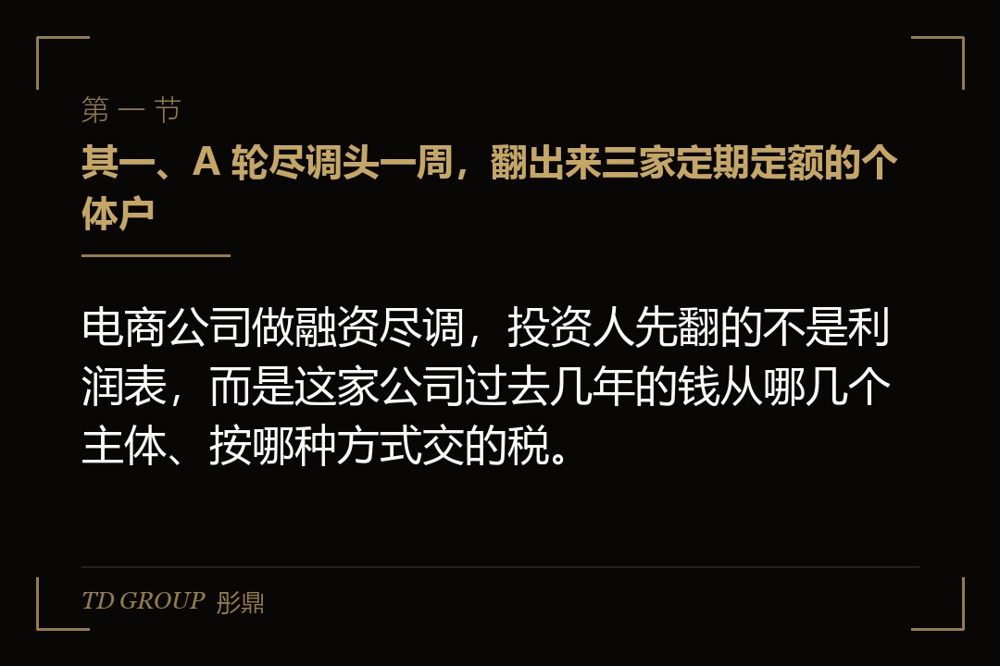
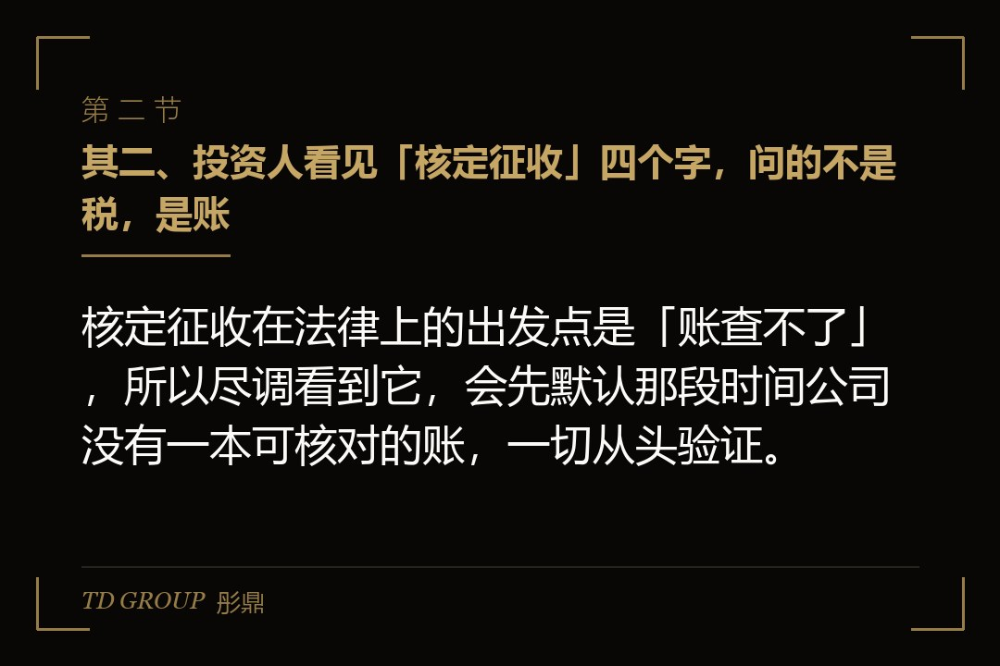
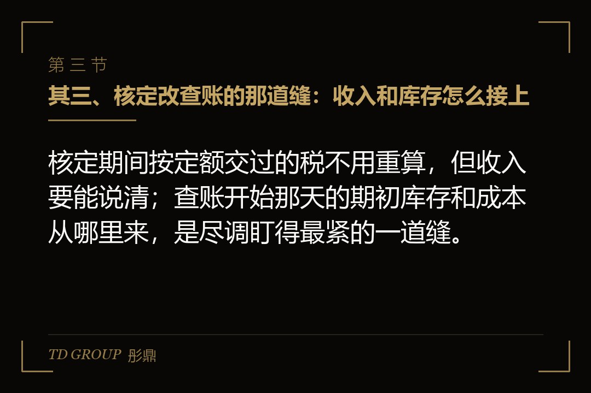

其一、A 轮尽调头一周，翻出来三家定期定额的个体户

结论先行：电商公司做融资尽调，投资人先翻的不是利润表，而是这家公司过去几年的钱从哪几个主体、按哪种方式交的税。
假设有家做母婴用品的电商公司，去年营收做到三亿元，今年谈 A 轮，投资人给了投资意向书，接着派会计师和律师进场做尽调。尽调，就是投资人在掏钱之前把公司里里外外查一遍。头一周，会计师就在银行流水里发现了三家个体工商户，收款账户是老板本人和他太太的名字。
老板解释得很坦然：公司 2023 年才成立，之前两年生意是用三家个体户网店做的，都在税务机关办了定期定额，按期交税，从来没欠过。他觉得这是规矩事，甚至有些委屈：那时候规模小，代账公司说个体户就该这么交。
会计师没有反驳他，只是把三家个体户在平台后台的年度成交额调出来，放在定额旁边。那两年三家店的成交额加起来一亿多，而定额对应的是小生意的量级。两个数摆在一起，投资人的头一个反应不是「你少交了多少」，而是「那两年的收入，到底有没有一本能查的账」。
这就是本文要讲的事：核定征收这段历史，在融资、被收购和上市的尽调里怎么交代才过得去。核定本身是《税收征管法》认可的一种征收方式，问题从来不在「核定过」，而在核定期间的收入、成本和主体，能不能被今天的报表接住。
其二、投资人看见「核定征收」四个字，问的不是税，是账

结论先行：核定征收在法律上的出发点是「账查不了」，所以尽调看到它，会先默认那段时间公司没有一本可核对的账，一切从头验证。
先把核定征收说清楚。《税收征管法》第三十五条列了税务机关有权核定应纳税额的情形：依法可以不设账的、该设账没设的、账目混乱查不了的、申报明显偏低又说不出理由的，等等。说白了，核定是税务机关在「账查不了」的时候替你算一个数。它是征收方式，不是优惠。
个体户常用的定期定额，是其中一种核法：税务机关认定这家个体户规模小、达不到建账标准，给它核一个定额，按期交，超过定额一定幅度要另行申报。各地对电商类个体户的核定资格近两年在收紧，口径不一，以主管税务机关认定为准。这些细节本专题另有文章展开，不在本文重复。
回到尽调这一端。会计师看到「定期定额」四个字，脑子里立刻翻译成一句话：这段时间，这家公司在法律意义上没有账。收入没有逐笔记，成本没有凭证，库存没有盘点。于是他们会问三个问题：那两年真实收入是多少、靠什么证明；成本能不能还原；三家个体户和今天这家公司是不是同一盘生意。
老板往往答不上第二个问题。母婴那家公司，供应商多数是小厂，当年拿货没要发票，物流费用走的是个人账户。收入可以从平台后台拉出来，成本却只剩几张手写单。尽调报告里会写一句很客气的话：历史期间的收入与成本无法取得充分证据。这句话在投资人眼里，等于那两年的利润按零算。
其三、核定改查账的那道缝：收入和库存怎么接上

结论先行：核定期间按定额交过的税不用重算，但收入要能说清；查账开始那天的期初库存和成本从哪里来，是尽调盯得最紧的一道缝。
假设那家母婴公司 2023 年成立后，把生意逐步搬进了公司，三家个体户在 2024 年底陆续注销。公司从成立起就是查账征收，也就是按账本上的收入减成本算税。听起来干净，但会计师追问的是那道缝：个体户最后一批库存，是怎么进到公司账上的？
现实里的答案常常是「直接搬过去了」。货没有作价，没有发票，公司账上的期初库存是会计凭记忆估的。这意味着公司头一年的成本基数是虚的，毛利率跟着失真。投资人拿一个失真的毛利率去估值，要么估高了以后要吐回来，要么干脆不敢用。
再往前看，2025 年三季度起，平台按季向税务机关报送平台内经营者的收入信息。这件事的机制本专题另有文章讲，这里只说它对尽调的意义：从那时起，平台报的数、银行流水的数、公司申报的数，三个数会被放在同一张纸上比。之前的历史没有平台报送，但会计师会用同样的办法，自己把三个数对一遍。
衔接的正路只有一条：把个体户期间的收入按平台后台和收款账户逐月还原成一张收入表，把最后一批库存按当时的进货价作价，走一笔正式的转让，开票、交税，让公司账上的期初数有来源。这件事事后补做也可以，但要跟主管税务机关说清楚。建账的具体过程本专题另有文章，这里不展开，具体以主管税务机关口径为准。
其四、补税不是交完就完，它要进报表
结论先行：补缴的税款要追溯调整到它所属的那一年，滞纳金和罚款进营业外支出且不能税前扣除，这三笔钱都会在报表上留下痕迹。
母婴那家公司的尽调走到第三周，税务师给出了结论：三家个体户那两年按平台成交额算，收入远超定额，超出部分没有申报，还有一部分货款走了老板太太的私户，属于隐匿收入。按《税收征管法》，少缴的税要追缴，从滞纳之日起按日加收万分之五的滞纳金，偷税的还要处不缴或少缴税款百分之五十以上五倍以下的罚款。
这不是吓唬人。国家税务总局 2026 年 7 月曝光了 7 起网红网店偷税案件，手法都是私户收款、转换收入性质或者干脆不申报，少缴税款从几十万元到五百多万元不等，追缴加滞纳金加罚款，合计约为少缴税款的两倍上下。补税那天的数怎么算出来，本专题另有文章，这里只讲它怎么进报表。
假设税务师算出那家公司那两年少缴的税款有五百万元左右，加上滞纳金和罚款，一次要拿出一千万元上下。这笔钱在报表上分三处走：税款本身追溯调整到 2023 年和 2024 年的账上，那两年的利润相应往下压；滞纳金和罚款计入营业外支出，而且按企业所得税法不能税前扣除，等于用税后利润去付。
投资人看到的结果是：过去两年的净利润被重述，今年的利润表上多了一笔一千万元的非经常性支出，账上现金少了一千万元。估值模型里的每一个数都动了。所以尽调里的补税，从来不只是「交一笔钱」，它是重写过去两年的报表。具体以主管税务机关口径与会计准则为准。
其五、税务合规证明：券商要的那张纸从哪来
结论先行：无违法违章证明由主管税务机关出具，前提是欠税、滞纳金、罚款全部处理完毕，报告期内存在过的每一个主体都要能拿到这张纸。
再往后走一步。假设那家母婴公司 A 轮顺利，两年后要报上市，券商进场，头一批要的材料里就有税务机关出具的无违法违章证明。各地叫法不一，有的叫涉税信息查询，有的叫纳税证明。它的作用是让监管相信这家公司在报告期内没有税务上的硬伤。报告期，就是上市要把账翻给监管看的那几年。
这张纸不好拿的地方有两点。头一点，它是主体级的。公司要一张，三家已经注销的个体户按理也要能说清它们在报告期内的纳税状况。注销并不意味着历史一笔勾销，税务机关的记录还在。所以越早把个体户的历史处理干净、把处理结果留档，后面这张纸越好拿。
第二点，它是结果级的。补税没交完、罚款还在争议中、有一笔滞纳金挂着，税务机关就不会出具。前面那一千万元，要在申请这张纸之前全部结清。这也是为什么有经验的券商会把税务清理排在上市筹备的头一年，而不是临报材料前才想起来。
券商还会问一个 A 轮投资人不一定问的问题：报告期内有没有主体从核定改成查账。有的话，改的那一年前后的毛利率、税额占收入的比例有没有跳变，跳变的理由能不能写进招股书。这一段解释写不圆，问询函里就会有一条专门问它。具体以主管税务机关口径与监管问询为准。
其六、两套账和多主体，为什么在这一步全暴露
结论先行：尽调把平台后台、收款账户、税务申报三组数据放在一起比对，多主体拆分和账外收入在这一步同时暴露，因为它们对不上同一盘生意。
母婴那家公司的三家个体户，本来就是同一盘生意：同一个实控人，同一个仓库发货，同一批供应商，收款账户是夫妻俩。会计师把这些线索连起来，结论只有一个：这三家店和今天的公司要合并看，那两年的收入要合起来算。合并之后，年成交额早就过了小规模纳税人五百万元的界线。
小规模纳税人是指年应税销售额不超过五百万元的纳税人，超过就要登记为一般纳税人，按销项减进项算增值税。《增值税法》2026 年 1 月 1 日起施行，这条界线没变。三家个体户分开看各自都在线内，合起来看早就在线外，这就是「拆主体」在尽调里站不住的原因。
账外收入的问题也是在这一步一起出来的。老板算的利润和报表上的利润差在哪、尽调怎么用几组互不相干的数据把它对出来，另有一篇讲两套账的文章，不在本文展开。要说的是：核定征收的历史和账外收入常常长在一起，因为核定期间没人记账，收入走哪个账户全凭习惯。
还有一件事顺带提一句：电商公司做代销、代采、平台撮合的，收入按总额记还是按净额记，会直接改营收规模，尽调也会重看。这件事另有文章讲，这里不展开。合并主体、还原收入、判断总额净额，三件事往往在同一份尽调报告里出现，老板要有心理准备。
其七、清理要多久，清不干净会怎样
结论先行：把核定征收那段历史清理到尽调能接受，通常要跨一到两个审计年度；清不干净的代价有三档，估值打折、条款加码、直接不投。
先说时间。母婴那家公司从尽调翻出问题，到补税结清、个体户历史留档、公司期初库存重新作价，走了大半年。之后还要一个完整的会计年度，让新的报表跑出一套能对得上的毛利率和税额。所以这件事的时间单位是年，不是月。想融资的公司，得在见投资人之前一年就动手。
再说代价。头一档是估值打折：投资人只按经审计、能证明的利润算，那两年说不清的利润按零计入，估值从老板心里那个数往下砍。第二档是条款加码：投资协议里加一条税务赔偿，历史税务问题被追缴的钱由老板个人承担；再加一条对赌，业绩不达标要补股权；有的还要留一笔钱在共管账户，等追溯期过了再放。
第三档是直接不投。假设另有一家做家居用品的电商公司，被一家上市公司谈收购，买方尽调发现它到谈判那天还有两家个体户在用定期定额跑主力销售，历史补税从来没算过。买方没有还价，直接终止，理由写得很短：税务历史不可估。这不是买方苛刻，而是它自己也要向监管交代并表之后的合规。
还有第四种结局，算是好的那种。假设一家做跨境电商的公司拿到投资意向书后，主动跟投资人说，先给我们半年，把核定期间的收入还原、补税结清、主体合并，再回来谈价。投资人答应了。半年后重新尽调，价格谈得比原来顺，因为能证明的利润变多了，投资人不用再为说不清的那部分留折扣。
其八、交代这段历史的顺序：先算清，再结清，再合并，最后开证明
结论先行：核定征收的历史要按算清、结清、合并、证明四步交代，顺序反了就要返工；每一步的口径都以主管税务机关的认定为准。
回到母婴那家公司，它最后是这么走的。头一步，把三家个体户两年的收入按平台后台和收款账户逐月还原，做成一张收入表，跟主管税务机关沟通补缴。第二步，把税款、滞纳金、罚款一次结清，拿到完税凭证，追溯调整报表。
第三步，把三家个体户跟公司的关系写成一份说明，期初库存重新作价入账，让公司账上的每个期初数都有来源。第四步，向主管税务机关申请无违法违章证明并留档，给下一轮融资和将来的券商备着。四步的顺序不能倒：没算清就去结清，数是错的；没结清就去开证明，税务机关不会给。
A 轮最终签了，估值比老板一开始要的低，但投资协议里的税务赔偿条款有了明确的上限，因为历史已经量化。投资人的原话是：我们不怕你交过核定，怕的是你说不清。这句话可以当成这段历史的判据。
彤鼎的税务筹划服务里有一条电商税务合规路线图（含核定征收申请）：先判断这家店的主体和规模能不能核、在哪个主管税务机关能核，申请这一步我们帮你办，最后把核定之前那段历史账衔接上；对准备融资或上市的公司，路线图的重点落在最后那一段，把历史账接到报告期的报表上。
最后留一个问题给正在筹备融资的电商老板。核定征收那段历史，你打算在见投资人之前自己先算清、先结清，估值按一本干净的账来谈；还是等尽调翻出来，让投资人替你算这笔账，再从对价里一笔扣掉。两条路的税一分不少，差的只是谁来定价。